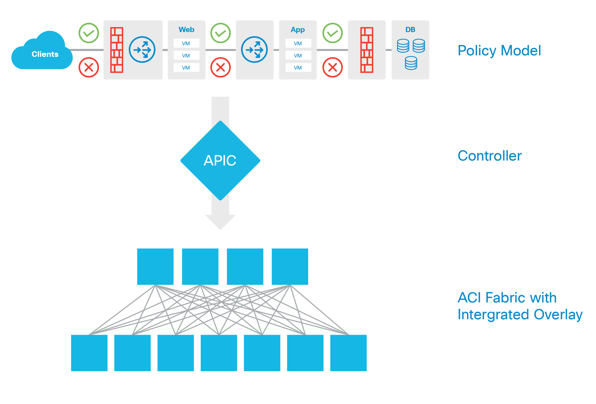
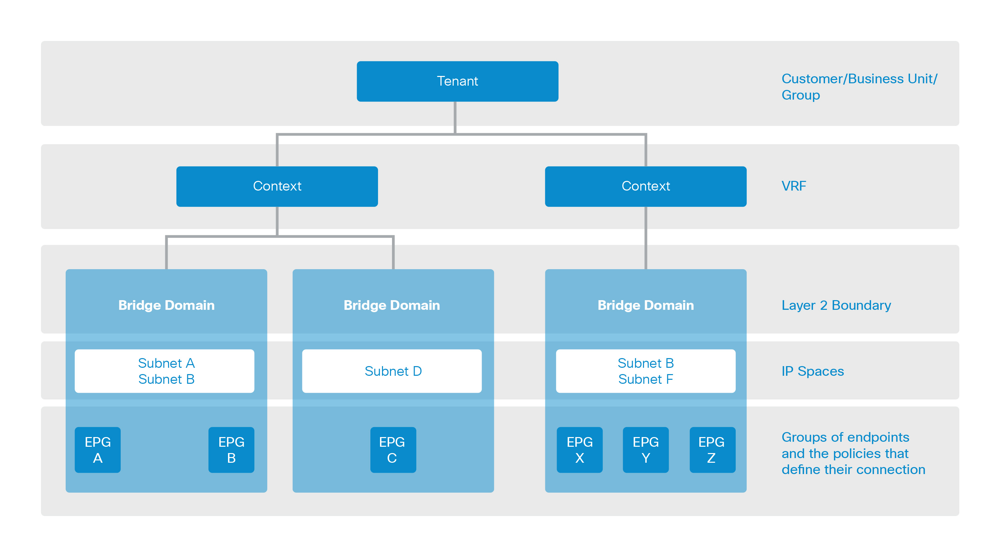

Infrastructure as Objects¶
ACI uses a combination of Cisco Nexus 9000 Series Switch hardware and Application Policy Infrastructure Controllers for policy-based fabric configuration and management. These infrastructure components can be integrated with Cisco and third-party service products to automatically provision end-to-end network solutions.
As shown in the following diagram, the logical policy model is built through manipulation of the dMIT, either through direct GUI, programmatic API, or through traditional CLI methods. Once the policy is built, the intention of the policy gets resolved into an abstract model, then is conferred to the infrastructure elements. The infrastructure elements contain specific Cisco ASIC hardware that make them equipped, purpose-built agents of change that can understand the abstraction that the policy controller presents to it, and automate the relevant concrete configuration based on the abstract model. This configuration gets applied when an endpoint connects to the fabric and first transmits traffic.
{kind=link}
The purpose-built hardware providing the intelligent resolution of policy configuration is built on a spine-leaf architecture providing consistent network forwarding and deterministic latency. The hardware is also able to normalize the encapsulation coming in from multiple different endpoints regardless of the type connectivity.
If an endpoint connects to a fabric with an overlay encapsulation (such as VXLAN), uses physical port connectivity or VLAN 802.1Q tagging, the fabric can take accept that traffic, de-encapsulate, then re-encapsulate it to VXLAN for fabric forwarding, then de-encapsulate and re-encapsulate to whatever the destination expects to see. This gateway function of encapsulation normalization happens at optimized hardware speeds in the fabric and creates no additional latency or software gateway penalty to perform the operation outside of the fabric.
In this manner, if a VM is running on VMWare ESX utilizing VXLAN, and a VM running on Hyper-V using VLAN 802.1Q encapsulation, and a physical server running a bare metal database workload on top of Linux, it is possible to configure policy to allow each of these to communicate directly to each other without having to bounce to any separate gateway function.
This automated provisioning of end-to-end application policy provides consistent implementation of relevant connectivity, quality measures, and security requirements. This model is extensible, and has the potential capability to be extended into compute and storage for complete application policy-based provisioning.
The automation of the configuration takes the Logical model, and translates it into other models, such as the Resolved model and the Concrete model (Covered later in this chapter). The automation process resolves configuration information into the object and class-based configuration elements that then get applied based on the object and class. As an example, if the system is applying a configuration to a port or a group of ports, the system would likely utilize a class-based identifier to apply configuration broadly without manual iteration. As an example, a class is used to identify objects like cards, ports, paths, etc; port Ethernet 1/1 is a member of class port and a type of port configuration, such as an access or trunk port is a subclass of a port. A leaf node or a spine node is a subclass of a fabric node, and so forth.
The types of objects and relationships of the different networking elements within the policy model can be seen in the diagram below. Each of these elements can be managed via the object model being manipulated through the APIC, and each element could be directly manipulated via REST API.
{kind=link}